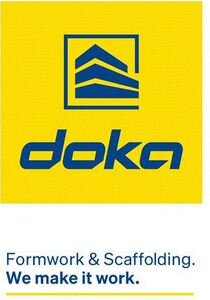

Trade Mark Journal No.2025/020 16 May 2025
WO0000001840057 (6,7,9,19,37,42)
Office of origin: Austria
Date of International Registration:4 November 2024
Date of designation in the UK:
4 November 2024

The mark contains the colours yellow and blue.
International priority date claimed: 8 May 2024
(Austria)
- Class 6
- Formwork and its parts for concrete construction, namely wall formwork, sliding formwork, frame formwork, beam formwork, column formwork, single-sided formwork, composite formwork, circular formwork, slab formwork, ceiling tables, panel slab formwork, beam ceiling formwork, monolithic formwork, climbing formwork, self-climbing formwork, crane climbing formwork, platform climbing formwork, protection screens, self-climbing protection screens, cooling tower formwork, shaft formwork, dam formwork, facade formwork, tunnel formwork, tunnel formwork carriages, bridge formwork, cantilever forming travellers, composite forming carriages; load-bearing and support structures and their parts for formwork for concrete construction, namely load-bearing scaffolding, shoring towers, support scaffolding, plumbing accessory, platforms, element supports, adjustment supports, set-up aids, rails, supports, uprights, slabs, beams, latches, bars, bracings, heads, bearing, frames, assembly shoes; scaffolding and its parts, namely working and protective scaffolding, climbing scaffolding, modular scaffolding, scaffolding towers, stair towers, access steps, step-throughs, stages, platforms, consoles, surfacings, stands, fall protection, enclosures, railings, parapets, mobile scaffolding, safety grids, safety nets; safety devices and their parts, namely access steps, step-throughs, stages, platforms, consoles, surfacings, stands, fall protection, enclosures, railings, parapets, protective shields, collecting grids, safety nets; transportable buildings and their parts for formwork use; transport aids for the aforementioned goods, namely bins, containers, pallets, reusable containers; fittings for formwork, load-bearing and supporting structures, scaffolding, safety equipment, transportable buildings and transport aids, namely grids, profiles, tubes, anchors, brackets, cotters, cones, nuts, anchor plates, couplings, clips, stretchers, ferrules, plugs, spindles, racks, bolts, casings, brackets, straps, supports, nozzles; metal hardware and small items of metal hardware for assembly, assembly aid, adjustment, locking and disassembly of the aforementioned goods; formwork and its parts for the manufacture of prefabricated components; all the aforementioned goods made of metal or predominantly of metal.
- Class 7
- Feeding, lifting and hoisting devices for formwork, for load-bearing and supporting structures, for scaffolding and for safety devices as well as their parts.
- Class 9
- Software, in particular sensory software, application simulation software, virtual reality, graphic art software, scheduling software, concrete monitoring software, building information modeling [BIM] software, construction site software, manufacturing software, civil engineering software, computer-aided design (CAD) software, electronic article surveillance (EAS) software and cloud computing software; computer software for data processing in connection with construction services; sensors, in particular digital, electric, electronic, photoelectric, optical, electro-optical and synchro sensors; sensor controllers; measuring devices; digital indicators; digital transmitters; digital signs; digital tablets; electronic digital signboards; digital signal processors; virtual reality hardware.
- Class 19
- Formwork and its parts for concrete construction, namely wall formwork, sliding formwork, frame formwork, beam formwork, column formwork, single-sided formwork, composite formwork, circular formwork, slab formwork, ceiling tables, panel slab formwork, beam ceiling formwork, monolithic formwork, climbing formwork, self-climbing formwork, crane climbing formwork, platform climbing formwork, protection screens, self-climbing protection screens, cooling tower formwork, shaft formwork, dam formwork, facade formwork, tunnel formwork, tunnel formwork carriages, bridge formwork, cantilever forming travellers, composite forming carriages; load-bearing and support structures and their parts for formwork for concrete construction, namely load-bearing scaffolding, shoring towers, support scaffolding, plumbing accessory, platforms, element supports, adjustment supports, set-up aids, rails, supports, uprights, slabs, beams, latches, bars, bracings, heads, bearing, frames, assembly shoes; scaffolding and its parts, in particular working and protective scaffolding, climbing scaffolding, modular scaffolding, scaffolding towers, stair towers, access steps, step-throughs, stages, platforms, consoles, stands, walkways, fall protection, enclosures, railings, mobile scaffolding, safety grids, safety nets, safety screens; safety devices and their parts, namely access steps, step-throughs, stages, platforms, consoles, surfacings, stands, fall protection, enclosures, railings, parapets, protective shields, collecting grids, safety nets, safety screens; transportable buildings and their parts for formwork use; transport aids for the aforementioned goods, namely bins, containers, pallets, reusable containers; fittings for formwork, load-bearing and supporting structures, scaffolding, safety equipment, transportable buildings and transport aids, namely grids, profiles, tubes, anchors, brackets, cotters, cones, nuts, anchor plates, couplings, clips, stretchers, ferrules, plugs, spindles, racks, bolts, casings, brackets, straps, supports, nozzles; prefabricated components; formwork and its parts for the manufacture of prefabricated components; all the aforementioned goods not made of metal.
- Class 37
- Assembly, disassembly and rental of formwork, load-bearing and supporting structures, scaffolding, safety devices, transportable buildings, transport aids, formwork equipment as well as their parts and of formwork accessories; cleaning, maintenance, servicing, repair of formwork, load-bearing and supporting structures, scaffolding, safety devices, transportable buildings and transport aids, formwork equipment and their parts and of formwork accessories; providing information and advice regarding the aforementioned services; construction consultancy in the field of formwork, load-bearing and supporting structures, scaffolding, safety devices and transportable buildings; installation and repair of measuring and testing equipment in the field of formwork, load-bearing and supporting structures, scaffolding, safety devices, transportable buildings and concrete; installation of equipment for processing digital signals.
- Class 42
- Engineering and consultancy services, namely planning, design and development of formwork, load-bearing and supporting structures, scaffolding, transportable buildings and transport aids; technical project planning in the field of formwork, load-bearing and supporting structures, safety devices and scaffolding; technical inspection services relating to formwork, load-bearing and supporting structures, safety devices and scaffolding; technical data analysis services in the field of formwork, load-bearing and supporting structures, safety devices and scaffolding; project management in the field of formwork, load-bearing and supporting structures, safety devices and scaffolding; industrial testing of formwork, load-bearing and supporting structures, safety devices and scaffolding; research and development services in the field of concrete technology and construction processes; monitoring, testing and examination of concrete maturity; design and development of computer software in the field of formwork, load-bearing and support structures, safety devices and scaffolding; rental of software, namely software for inspecting, tracking and processing customer and project-specific data and documents in the field of formwork, load-bearing and supporting structures, safety devices and scaffolding; provision of non-downloadable software in the field of formwork, load-bearing and supporting structures, safety devices and scaffolding; development, installation and maintenance of software, in particular software for the planning, management and use of formwork, load-bearing and supporting structures, safety devices and scaffolding, including parts and fittings therefor; computer-aided planning, design, construction and creation of construction projects; cloud computing; hosting services; development of hardware for digital signal processing; development, installation and maintenance of software, namely software for digital signal processing; digital services, in particular software and digital applications supporting the design and use of formwork, load-bearing and supporting structures, safety devices and scaffolding and optimising construction operations in the planning, implementation, operation and demolition and disposal phase, as well as the related ability to obtain field data and general information; software as a service [SaaS]; platform as a service [PaaS].
Doka GmbH
Representative: SONN Patentanwälte GmbH & Co KG, Riemergasse 14, Wien, A-1010, AUSTRIA